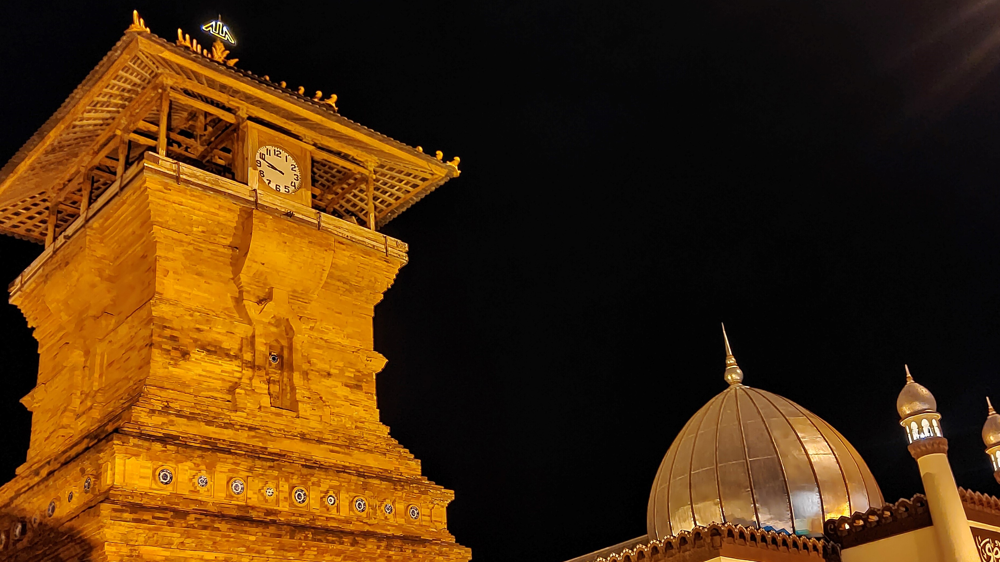

Sudah banyak gambaran tentang Kudus belum nih? Selain wisata umum, alam, bahkan kuliner, seperti julukannya "Kudus Kota Santri" jadi tak heran jika Kota Kudus langganan penziarah di Indonesia. Hal itu itu karena di Kota Kretek ini terdapat dua makam Wali Songo, yaitu makam Sunan Kudus dan Sunan Muria.
Menara Kudus

Menara Kudus
Menara ini menyerupai bangunan candi yang merupakan corak dari agama Hindu. Dahulu, konon di bawah menara Kudus terdapat sebuah sumber mata air kehidupan yang tidak pernah kering.
Menurut sejarah, Masjid Kudus dibangun oleh Sunan Kudus pada tahun 956 Hijriah. Hal tersebut terungkap melalui sebuah batu tulis yang berada di ruangan imam masjid. Huruf tulisan di batu tersebut menggunakan bahasa Arab, akan tetapi sulit dibaca karena huruf-huruf pada tulisan itu sudah rusak.
Selain dikenal sebagai seorang wali, Sunan Kudus dikenal karena memiliki keilmuan yang mempuni di bidang agama. Sunan Kudus mendapat gelar Waliyyul Ilmi, sehingga beliau diangkat sebagai penghulu (Qodi) di kerajaan Demak.
Makam Sunan Kudus berada di kawasan masjid Al-Aqsha Kudus di Jalan Kauman, Kecamatan Kudus, Kabupaten Kudus. Masjid Al-Aqsha Kudus merupakan masjid peninggalan Sunan Kudus yang memiliki arsitektur unik karena mempunyai gapura serta menara layaknya kuil agama Hindu. Tujuannya agar masyarakat Kudus yang saat itu baru memeluk Islam dari agama Hindu tidak merasa asing jika masuk ke dalam masjid.
Sunan Muria merupakan salah satu anggota Wali Songo yang menyebarkan ajaran Islam di Pulau Jawa. Adapun wilayah dakwah Sunan Muria meliputi daerah Kudus, Pati dan daerah-daerah pedalaman di sekitar gunung Muria.
Kompleks Makam Sunan Muria berada di Bukit Muria yang terletak di Desa Colo, Kecamatan Dawe, Kabupaten Kudus, Provinsi Jawa Tengah. Kompleks makam tersebut berada pada ketinggian lebih dari 1600 meter di atas permukaan laut.
Sesudah ziarah di makam Sunan Muria, maka hendaknya menyempatkan diri untuk berziarah di makam Syaikh Hasan Sadzali. Karena lokasi makam tersebut hanya berjarak sekitar 3 kilometer dari makam Sunan Muria.
Syaikh Hasan Sadzali merupakan seorang ulama yang berasal dari Timur Tengah tepatnya Baghdad Irak. Beliau berdakwah menyebarkan agama Islam sampai ke Tanah Jawa.
Kabupaten Kudus adalah sebuah kabupaten yang berada di provinsi Jawa Tengah, Indonesia. Ibu kota kabupaten ini adalah Kota Kudus, terletak di jalur pantai Timur laut Jawa Tengah antara Kota Semarang dan Kota Surabaya. Kota ini berjarak sekitar 51 kilometer dari arah Timur Kota Semarang.